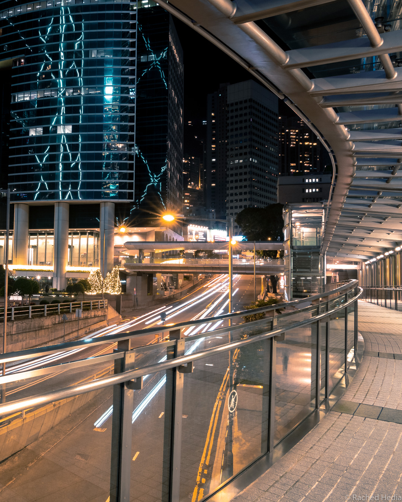
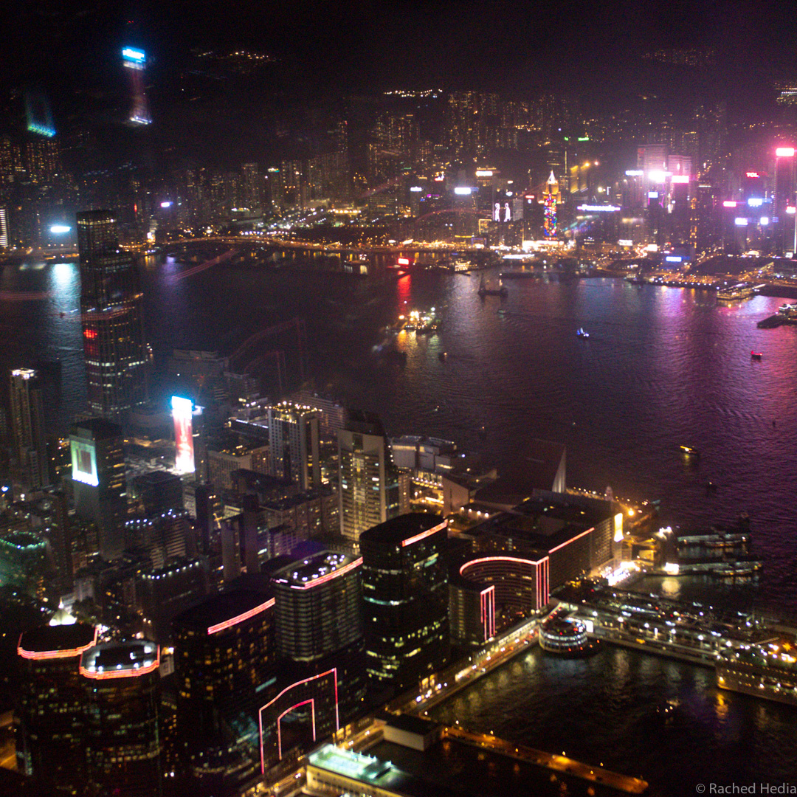
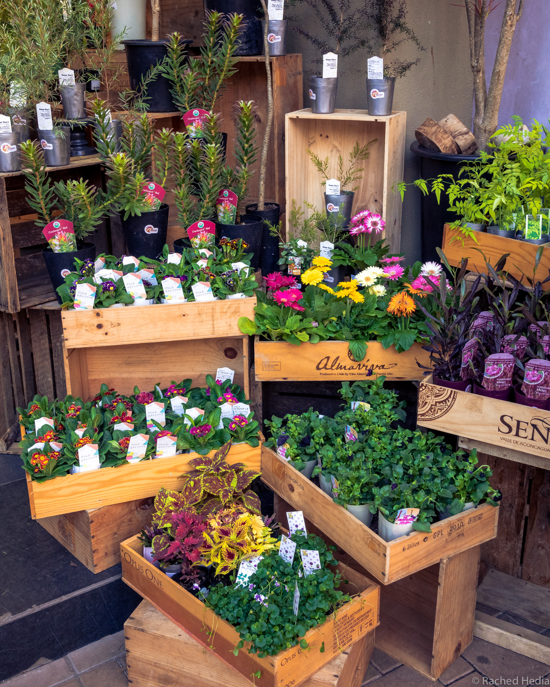

Hong Kong : Top 10 des choses à faire et carnet d'adresses
Les distractions sont nombreuses à Hong Kong et on n’a pas eu le temps de s’ennuyer. Voici notre top 10 des choses qu’on a aimé faire à Hong Kong.
Top 10 des choses à faire à Hong Kong
1. Prendre le Star Ferry
C’est le moyen de transport le plus cool pour passer de Kowloon à l’île de Hong Kong (l’autre étant le métro). Il ne vous en coûtera que 2,70HKD (soit 0,30€) pour faire la traversée et vous pourrez admirer la baie de Hong Kong et les gratte-ciel du quartier d’affaires de Central.
2. Visiter le quartier de Tim Sha Tsui
Situé sur l’île de Kowloon, Tim Sha Tsui est le haut lieu du shopping et abrite plusieurs centres commerciaux. Dans ce quartier se trouvent également Avenue of Stars (qui reprend le concept de Hollywood Boulevard), Nathan road où se concentrent nombre de boutiques de fringues et le parc Kowloon park.
3. Visiter le quartier d’affaires de Central
Dire que Central est le quartier d’affaires de Hong Kong est un peu réducteur. On peut vite s’imaginer (à tort) que c’est comme visiter le quartier de la Défense à Paris. Mais c’est en fait bien plus que ça. Cet endroit n’est pas seulement fréquenté par des businessmen et se trouve être un des quartiers les plus animés de la ville.
Emprunter le Mid-levels escalator, se rendre sur la place Golden Bauhinia square, se perdre dans le dédale des passerelles, écouter de la musique live dans la rue animée de Lan Kwai Fong, voilà quelques unes des activités que vous pourrez y faire.

4. Visiter le quartier historique de Sheung Wan
Sheung Wan est le coeur historique de Hong Kong. Quelques soient vos maux, vous trouverez un remède dans les nombreuses boutiques de médecine traditionnelle chinoise. Il est toujours intéressant d’y faire un tour, ne serait-ce que pour respirer les odeurs subtiles de poisson séché…Coup de fouet olfactif garanti !
Dans ce quartier se trouve aussi l’un des plus vieux temples de Hong Kong, le temple de Man Mo.
Pour voir quelques oeuvres de street art, se rendre dans les rues Hollywood Road, Queens Road West et Wing Lok street.
5. Prendre un verre sur un rooftop
Les rooftops ne sont pas rares à Hong Kong. Nous en avons testé deux à l’ambiance très différente.
Sur l’île de Kowloon, l’Ozone Bar du Ritz Carlton se situe au 118ème étage de la ICC tower. A 490 mètres de hauteur, la vue est spectaculaire et surplombe les îles de Hong Kong et de Kowloon.
Sur l’île de Hong Kong, le Piqniq est niché au coeur du quartier de Central, au 21ème étage. Dans une ambiance décontractée et chaleureuse, ce rooftop offre une jolie vue de Hong Kong de l’intérieur, sur les buildings et les montagnes alentour.

6. Se reposer dans un parc
Envie d’une petite pause pour se couper de l’agitation urbaine ? Pourquoi ne pas vous détendre dans un des parcs en plein coeur de la ville :
- Kowloon park, le long de Nathan Road, pour se reposer à l’ombre des Chinese Banyan;
- Hong Kong park et son immense volière;
- Cheung Kong park, un minuscule oasis au coeur de Central.
7. Se ressourcer sur l’île de Lantau
Après des journées passées à arpenter la ville, quoi de mieux que de quitter la foule pour aller se détendre à la plage. A seulement 30 minutes en ferry de Central, Lower Cheung Sha Beach est une petite plage, peu fréquentée, sur l’île de Lantau. Au programme : déjeuner dans un petit restaurant face à la mer, baignade et coucher de soleil en compagnie des vaches qui arrivent en fin de journée !
8. Faire du shopping multimédia au Computer Center à Wan Chai
A Hong Kong, il peut être intéressant de faire son shopping multimédia…si nécessaire bien-sûr (je ne voudrais pas pousser à la consommation !). Des prix défiants toute concurrence : -20/-30% par rapport aux prix en Europe. Et surtout n’hésitez pas à négocier !
9. Faire la tournée des marchés
Les marchés sont légion en Asie et Hong Kong n’échappe pas à cette règle: marché nocturne de Temple Street Market, Flower Market et Bird Market (même si la visite de ce dernier nous a un peu attristé avec tous ces beaux spécimens enfermés en cage ou enchaînés - Brigitte Bardot sort de ce corps !). 
10. Monter au Victoria Peak
Faire l’ascension du Victoria Peak, beaucoup vous le conseilleront…et à raison. Une des plus belles vues sur l’île de Hong Kong. En tram ou en bus, en journée ou à la nuit tombée. A éviter le week-end si vous ne voulez pas faire des heures de queue. Préférez le bus au tram, plus économique et le trajet par les routes montantes et sinueuses se révèle être une vraie attraction.
Carnet d’adresses
Shopping multimédia
- Wan Chai Computer Center : 130 Hennessy Road, Wan Chai, Hong Kong
Rooftops
-
Ozone Bar : ICC Tower, 1 Austin Road West, Tsim Sha Tsui, Hong Kong, 118ème étage
-
Piqniq : 80 Queen’s Road, Central, Hong Kong
Restaurants
-
Passion by Gérard Dubois : boulangerie, pâtisserie et plats français. Sandwichs au saumon à tomber. 32-48 Mody Road, Tsim Sha Tsui, Hong Kong
-
Butao @ Central : cuisine japonaise. Goûtez le green ramen au basilic et parmesan, un mélange détonnant. 69 Wellington Street, Central, Hong Kong
-
Dim Sum : petite cantine bien locale perdue dans le quartier d’Aberdeen. 80 Shek Pai Wan Road, Tin Wan, Hong Kong
On ne devait rester que 5 jours à Hong Kong et nous y avons finalement passé 10 jours…
Ne manquez pas d’aller voir notre précédent post sur Hong Kong si vous voulez savoir ce qu’on en a pensé.
S'abonner à Le Monde Etcetera
Recevez les derniers posts directement dans votre boîte mail !